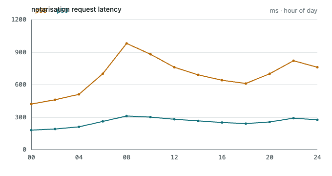
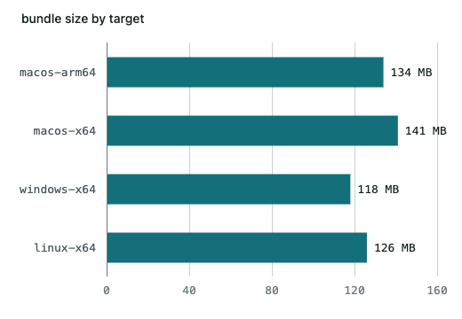

Notarisation fails on CI only. The same command signs and staples fine on my machine — where do the two runs diverge?
- ci-notarize.log12 KB
- tauri.conf.json4 KB
Notarisation fails on CI only. The same command signs and staples fine on my machine — where do the two runs diverge?
Two candidates. Either the runner has no identity in its keychain and codesign silently falls back to ad-hoc, or the bundle identifier differs and the notary service rejects the submission. The log ends at the submission, so the second is testable first.
The log line The signature does not include a secure timestamp only appears for ad-hoc signatures, so it is the first.
The runner never sees your keychain. codesign still succeeds — it falls back to an ad-hoc signature, which notarisation refuses. Not an entitlements problem. The fallback is configured at src-tauri/tauri.conf.json:41, and Apple documents the failure in notarizing macOS software.
Two things differ between the runs:
Developer ID Application from the login keychaincodesign resolves the identity to ad-hoc
--timeout passed to notarytool, which CI leaves at its defaultThe secrets the workflow expects are here:
/Users/flexo/Desktop/Projects/smetana/.github/workflows/release
Show me what each run actually used.
Read from both logs, same commit:
| Step | Local | ms |
|---|---|---|
| identity | Developer ID Application | 12 |
| entitlements | entitlements.plist | 3 |
| cdhash | a1b2c3d4e5f60718293a4b5c6d7e8f90a1b2c3d4 | 409 |
| Target | Identity | Sign | Notarise | Total |
|---|---|---|---|---|
| macos-arm64 · local | Developer ID | ok | ok | 4m 02s |
| macos-arm64 · ci | ad-hoc | ok | rejected | 1m 11s |
| macos-x64 · ci | ad-hoc | ok | rejected | 1m 09s |
| windows-x64 · ci | n/a | ok | n/a | 2m 48s |
xcrun notarytool submit target/release/bundle/macos/Smetana.app.zip --keychain-profile "AC_PASSWORD" --wait --timeout 30m
xcrun stapler staple target/release/bundle/macos/Smetana.app
codesign -dv --verbose=2 target/release/bundle/macos/Smetana.appA build without notarisation runs locally, but Gatekeeper will not let it start on anyone else's machine.
—
RELEASING.md, written when the first release was blocked by exactly this.
pub const EXPECTED_BD_VERSION: &str = "1.1.2";Nothing here needs a decision from you yet.
Draw the pipeline, and chart the timings.


Fix the identity lookup, then re-run the workflow.
The temporary keychain has to be created before tauri build runs, because the Rust step signs the sidecar binaries on its way through.
Adding a keychain step in front of the build, and deleting it in an if: always() step at the end. The identity is read once and passed down as